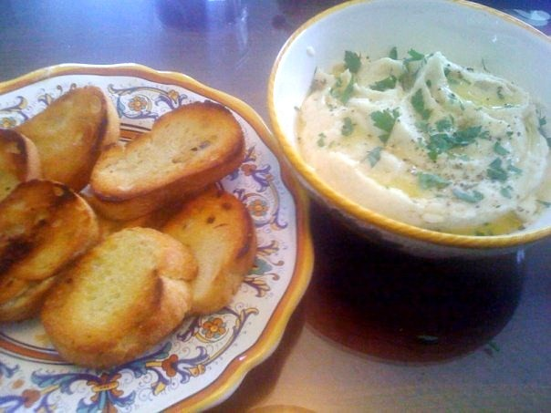

La véritable brandade de morue nîmoise
Europe
La brandade est une spécialité de Nîmes à base de morue, ou plus
précisément de merluche, qui était le nom donné au merlu
salé et séché, un poisson pêché en Méditerranée, avant de devenir le nom local de la morue.
La brandade est une pâte de couleur blanche composée de morue, d’huile d’olive et de lait. Cette
pâte pourra ensuite être agrémentée d’ingrédients divers qui ne
font pas partie de la composition de base, même si les débats sont nombreux quant à l’incorporation ou non
d’ail dans la
brandade. Dans tous les cas, la pâte ne comporte pas de pommes de terre.
